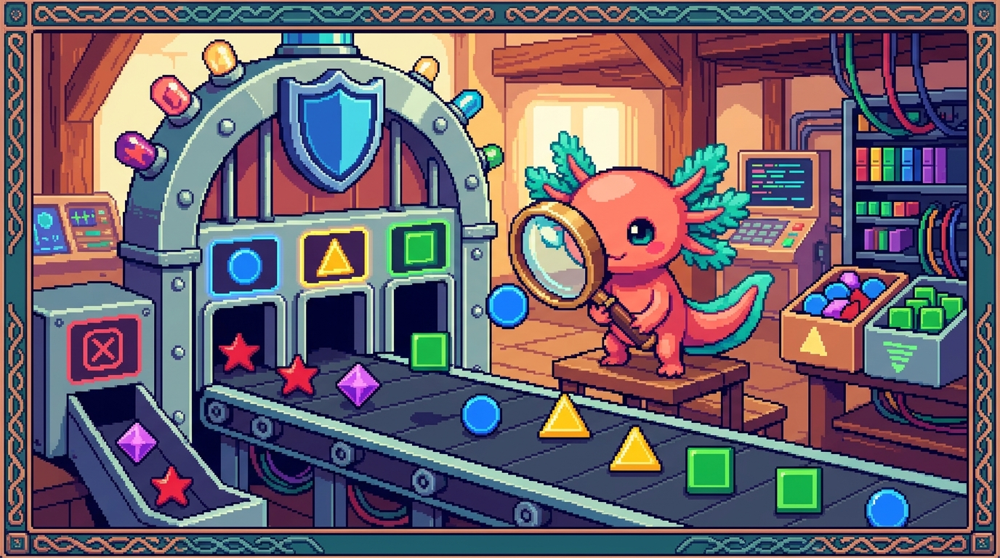

Capitulo 06 — Uniones, literales y estrechamiento

Hola otra vez, soy Bit, tu ajolote guia. En el capitulo anterior aprendiste a ponerle "etiquetas" a tus datos con tipos. Hoy vamos a dar un paso enorme: aprender a decir cosas como "esto es texto o numero" y "este estado solo puede ser
activoopausado, nada mas". Y lo mejor: TypeScript te ayudara a descubrir cual de las dos cosas es justo en el momento en que lo necesitas. A eso se le llama estrechamiento, y es una de las magias mas utiles del lenguaje. Respira, mueve las branquias, y vamos.
Recuerda la idea base de todo este modulo: TypeScript es JavaScript con tipos. Todo lo que veras hoy se ejecuta como JavaScript normal; los tipos solo viven mientras escribes el codigo y desaparecen al compilar. Asi que apoyate en lo que ya sabes de JavaScript (modulo 03): condicionales, typeof, comparaciones con ===, valores "verdaderos" y "falsos".
1. El tipo union: "esto o aquello"
A veces un valor puede ser de mas de un tipo. Por ejemplo, una funcion que recibe un identificador que a veces llega como numero y a veces como texto. En JavaScript simplemente lo aceptabas y ya. En TypeScript se lo decimos de forma explicita con una union.
🟦 ¿Que significa? — Tipo union (union type)
Es un tipo que dice "el valor puede ser uno de varios tipos posibles". Se escribe separando los tipos con una barra vertical
|, que aqui se lee como "o". Para que sirve: para describir datos que legitimamente pueden tener mas de una forma, sin renunciar a la seguridad de tipos. Donde se usa en un repo real: en Faro, una funcion que formatea un identificador podria recibirstring | number, porque GitHub a veces entrega IDs numericos y a veces cadenas.
Un ejemplo sencillo:
// El parametro id puede ser texto O numero
function mostrarId(id: string | number): string {
return `ID recibido: ${id}`;
}
mostrarId("abc-123"); // valido
mostrarId(42); // tambien valido
mostrarId(true); // ❌ Error: boolean no esta en la union
La parte string | number es la union. TypeScript ahora vigila que solo entren cadenas o numeros. Si intentas pasar un booleano, te avisa antes de ejecutar nada.
💡 Tip
Lee el simbolo
|como la palabra "o". Asistring | number | nullse lee literalmente "texto, o numero, o nulo". Tu cerebro lo procesara mucho mas rapido.
Lo que puedes hacer con una union
Aqui viene el detalle importante. Mientras un valor sea string | number, solo puedes usar lo que ambos tipos tienen en comun. Por ejemplo, .toFixed() existe en los numeros pero no en los textos, asi que TypeScript no te deja usarlo todavia:
function aDoble(valor: string | number) {
return valor.toFixed(2); // ❌ Error: 'toFixed' no existe en 'string'
}
TypeScript es prudente: como no sabe si en ese momento valor es texto o numero, no te deja usar nada que pueda fallar. ¿Como lo resolvemos? Necesitamos demostrarle cual de los dos es. Eso es el estrechamiento, y llegamos a el en un momento. Primero, un tipo de union muy especial y muy usado.
2. Tipos literales: valores exactos como tipo
Hasta ahora un tipo era una categoria (todos los textos, todos los numeros). Pero TypeScript puede ir mas fino y decir: "este valor no es cualquier texto, es exactamente la palabra activo".
🟦 ¿Que significa? — Tipo literal (literal type)
Es un tipo cuyo unico valor permitido es un valor concreto: una cadena especifica, un numero especifico o un booleano especifico. Por ejemplo, el tipo
"activo"solo acepta la cadena exacta"activo". Para que sirve: para limitar un valor a un conjunto cerrado y conocido de opciones, en vez de "cualquier texto". Donde se usa en un repo real: en RachaSimple, el estado de una racha de habito no es "cualquier texto": es una de unas pocas palabras fijas comoactivaorota.
Un literal solo no sirve de mucho (un tipo que solo acepta una palabra). La gracia aparece cuando combinas literales con uniones.
Uniones de literales: el patron estrella
// El estado de una racha solo puede ser una de estas tres palabras
type EstadoRacha = "activa" | "pausada" | "rota";
let estado: EstadoRacha;
estado = "activa"; // ✅ valido
estado = "rota"; // ✅ valido
estado = "muerta"; // ❌ Error: no esta entre las opciones permitidas
Esto es oro puro. Antes, en JavaScript, podias escribir estado = "actva" con un dedazo y no te enterabas hasta que algo se rompia en produccion. Ahora TypeScript te subraya el error mientras escribes.
🔎 En tu codigo
En RachaSimple, modelar el estado de una racha o de un habito como
"activa" | "pausada" | "rota"evita un monton de bugs. Si en algunifcomparas contra"pauseda"(mal escrito), TypeScript te avisa porque esa palabra no existe en el tipo. En Faro pasa lo mismo con el estado de un proyecto, algo como"al_dia" | "en_riesgo" | "atrasado".🟦 ¿Que significa? — Alias de tipo (
type)Es ponerle un nombre a un tipo para reutilizarlo. Se escribe
type NombreNuevo = .... Una vez definido, puedes usarNombreNuevoen muchos sitios en lugar de repetir la union completa. Para que sirve: para no repetir"activa" | "pausada" | "rota"cien veces y, si un dia agregas un estado, cambiarlo en un solo lugar. Donde se usa en un repo real: en RachaSimple y Faro, los tipos de dominio (estados, prioridades, fases) suelen vivir como alias en un archivo de tipos, importados desde componentes y hooks.💡 Tip
Una union de literales es como un menu cerrado de restaurante: solo puedes pedir lo que esta en la carta. Esto es muchisimo mas seguro que un
stringlibre, que seria como dejar al cliente escribir cualquier cosa en una servilleta.
3. Estrechamiento: convencer a TypeScript de cual tipo es
Volvamos al problema de la seccion 1: teniamos string | number y no podiamos usar .toFixed(). La solucion se llama estrechamiento.
🟦 ¿Que significa? — Estrechamiento (narrowing)
Es el proceso por el cual TypeScript reduce un tipo amplio (como
string | number) a uno mas concreto (solonumber) dentro de una parte del codigo, gracias a las comprobaciones que tu escribes. "Estrechar" = pasar de muchas posibilidades a menos. Para que sirve: para poder usar de forma segura los metodos y propiedades especificos de un tipo, una vez que has demostrado cual es. Donde se usa en un repo real: en Faro y RachaSimple, cada vez que recibes datos que pueden venir nulos o de varios tipos (respuestas de Supabase, datos de OpenAI), estrechas antes de usarlos.
Lo bonito es que el estrechamiento usa las mismas herramientas de JavaScript que ya conoces del modulo 03. TypeScript simplemente las "entiende" y ajusta el tipo segun la rama del codigo en la que estes. Veamos las principales.
3.1 Estrechar con typeof
🟦 ¿Que significa? —
typeofEs un operador de JavaScript que devuelve, como texto, el tipo de un valor en tiempo de ejecucion:
"string","number","boolean","object", etc. TypeScript lo usa como pista para estrechar. Para que sirve: para distinguir entre tipos primitivos (texto, numero, booleano) dentro de unif. Donde se usa en un repo real: en Faro, al normalizar un dato que puede llegar comostring | number.
function aDoble(valor: string | number): string {
if (typeof valor === "number") {
// Aqui dentro, TypeScript SABE que valor es number
return valor.toFixed(2); // ✅ ya es seguro
}
// Aqui afuera, solo queda la otra opcion: string
return valor.toUpperCase(); // ✅ TypeScript sabe que es string
}
Fijate en la magia: dentro del if, valor es number; despues del if, TypeScript descarta number (porque ya lo atrapamos) y deduce que lo unico que queda es string. No tuviste que decirselo: lo razono solo.
💡 Tip
Estrechar con
typeofes como mirar dentro de una caja antes de meter la mano. Una vez que sabes que dentro hay un numero, puedes hacer cuentas con tranquilidad.
3.2 Estrechar con === (igualdad estricta)
Cuando trabajas con uniones de literales (la seccion 2), la herramienta natural es comparar con ===. Cada comparacion descarta opciones.
🟦 ¿Que significa? —
===(igualdad estricta)Compara dos valores sin convertir tipos: solo es
truesi son del mismo tipo y el mismo valor. Es la comparacion que usaste en JavaScript; TypeScript la aprovecha para estrechar uniones de literales. Para que sirve: para preguntar "¿este estado es exactamenteactiva?" y, dentro de esa rama, saber con certeza cual literal es. Donde se usa en un repo real: en RachaSimple, al decidir que color o que texto mostrar segun el estado de la racha.
type EstadoRacha = "activa" | "pausada" | "rota";
function colorDeEstado(estado: EstadoRacha): string {
if (estado === "activa") {
return "verde";
}
if (estado === "pausada") {
return "amarillo";
}
// Solo queda "rota"
return "rojo";
}
⚠️ Cuidado
Usa siempre
===y nunca==para estas comparaciones. El==convierte tipos por detras y trae sorpresas (por ejemplo,0 == ""estrueen JavaScript). TypeScript y el equipo de cualquier proyecto serio prefieren===. En RachaSimple y Faro la regla es: siempre===.
3.3 Estrechar con truthiness (valores verdaderos/falsos)
🟦 ¿Que significa? — Truthiness (veracidad)
Es la idea de JavaScript de que ciertos valores se consideran "falsos" en un
if(null,undefined,0,"",false,NaN) y todos los demas se consideran "verdaderos". Unif (valor)aprovecha esto. Para que sirve: para descartarnulloundefinedde una union de forma rapida. Donde se usa en un repo real: en Faro, los datos de Supabase a menudo sonTipo | null; unif (proyecto)elimina elnully te deja trabajar tranquilo.
function nombreProyecto(nombre: string | null): string {
if (nombre) {
// nombre ya no es null aqui: es string (y ademas no vacio)
return nombre.trim();
}
return "Proyecto sin nombre";
}
⚠️ Cuidado
Truthiness descarta tambien la cadena vacia
""y el numero0, no solonull. Si para tu logica0o""son valores validos, comprueba explicitamente:if (valor !== null)en vez deif (valor). Es un error clasico contar mal una racha cuando el contador es0.
3.4 Estrechar con in
🟦 ¿Que significa? — Operador
inEs un operador de JavaScript que pregunta si una propiedad existe en un objeto:
"campo" in objetodevuelvetrueofalse. TypeScript lo usa para distinguir entre objetos de formas distintas. Para que sirve: para estrechar una union de objetos segun que propiedades tienen. Donde se usa en un repo real: en Faro, al distinguir una respuesta exitosa (que traedata) de una respuesta con fallo (que traeerror).
type Exito = { ok: true; data: string };
type Fallo = { ok: false; error: string };
type Resultado = Exito | Fallo;
function describir(r: Resultado): string {
if ("data" in r) {
// Solo Exito tiene 'data', asi que r es Exito aqui
return `Datos: ${r.data}`;
}
// El resto es Fallo
return `Error: ${r.error}`;
}
💡 Tip
Cuando los objetos de tu union comparten una propiedad "etiqueta" (como
ok: true/ok: false), puedes estrechar comparando esa etiqueta con===. A ese patron se le llama union discriminada y es comodisimo:if (r.ok) { ... }.
4. Type guards: tus propias preguntas de tipo
Las herramientas anteriores (typeof, in, ===) son guardias de tipo integradas. Pero a veces necesitas una comprobacion mas a tu medida y reutilizable. Para eso existen los type guards personalizados.
🟦 ¿Que significa? — Type guard (guardia de tipo)
Es cualquier comprobacion que le permite a TypeScript estrechar un tipo. Un type guard personalizado es una funcion que devuelve
true/falsey, ademas, le ensena a TypeScript que tipo es el valor cuando devuelvetrue, usando la sintaxis especialvalor is Tipo. Para que sirve: para encapsular una comprobacion de tipo y reutilizarla en varios sitios, manteniendo el estrechamiento. Donde se usa en un repo real: en RachaSimple, para validar que un texto cualquiera es de verdad unEstadoRachavalido antes de guardarlo.
type EstadoRacha = "activa" | "pausada" | "rota";
// El "valor is EstadoRacha" es la clave: es una "predicado de tipo"
function esEstadoRacha(valor: string): valor is EstadoRacha {
return valor === "activa" || valor === "pausada" || valor === "rota";
}
function procesar(textoDelServidor: string) {
if (esEstadoRacha(textoDelServidor)) {
// Aqui dentro, TypeScript trata textoDelServidor como EstadoRacha
const color = colorDeEstado(textoDelServidor); // ✅
console.log(color);
} else {
console.warn("Estado desconocido:", textoDelServidor);
}
}
🟦 ¿Que significa? — Predicado de tipo (
valor is Tipo)Es la parte
: valor is EstadoRachaen el tipo de retorno de la funcion. Le promete a TypeScript: "si esta funcion devuelvetrue, puedes confiar en quevalores de ese tipo". Para que sirve: para que tu funcion guardiana estreche el tipo en quien la llama, no solo devuelva un booleano cualquiera. Donde se usa en un repo real: en Faro, para validar datos que llegan de OpenAI o de Supabase antes de tratarlos como tipos de dominio confiables.⚠️ Cuidado
Un type guard es una promesa que tu haces. Si tu funcion devuelve
truepero la comprobacion interna esta mal, TypeScript te creera de todos modos y confiara en un tipo equivocado. Escribe la condicion con cuidado: es tu responsabilidad que sea verdad.
5. El tipo never: lo que no puede pasar
Llegamos al tipo mas filosofico de todos. Cuando estrechas tanto una union que ya no queda ninguna opcion, TypeScript le pone a ese valor el tipo never.
🟦 ¿Que significa? — Tipo
neverEs el tipo de un valor que no puede existir. Aparece cuando has descartado todas las opciones posibles de una union, o en funciones que nunca terminan normalmente (siempre lanzan un error). "never" significa literalmente "nunca". Para que sirve: sobre todo para comprobaciones de exhaustividad: asegurarte de que tu codigo maneja todos los casos de una union de literales. Si manana agregas un estado nuevo y olvidas manejarlo, TypeScript te avisa. Donde se usa en un repo real: en RachaSimple y Faro, en los
switchque deciden algo segun el estado, para que el compilador obligue a manejar cada estado posible.
El truco clasico: un switch que cubre todos los casos y, en el default, asigna el valor a una variable never.
type EstadoRacha = "activa" | "pausada" | "rota";
function etiqueta(estado: EstadoRacha): string {
switch (estado) {
case "activa":
return "En marcha";
case "pausada":
return "En pausa";
case "rota":
return "Se rompio";
default:
// Si manejamos TODOS los casos, aqui 'estado' es 'never'
const noDeberiaPasar: never = estado;
return noDeberiaPasar;
}
}
¿Por que es genial? Imagina que el equipo de RachaSimple decide anadir un cuarto estado, "reiniciada", al tipo EstadoRacha. En cuanto lo agregas a la union, TypeScript marca un error en la linea del default: ahora estado podria ser "reiniciada", asi que ya no es never. Eso te recuerda, sin que se te olvide, que debes anadir su case. Es como una alarma que suena justo donde tienes que actuar.
💡 Tip
Recuerda:
voidsignifica "esta funcion no devuelve nada util" (pero termina).neversignifica "este punto no se alcanza jamas" o "este valor no puede existir". Son distintos:voides para funciones que terminan sin valor;neveres para lo imposible.🔎 En tu codigo
Cada vez que en Faro escribas un
switchsobre el estado de un proyecto ("al_dia" | "en_riesgo" | "atrasado"), agrega el casodefaultconconst _: never = estado. Asi, el dia que el roadmap crezca y agregues un estado nuevo, el compilador te obliga a actualizar todos los lugares que dependen de el. Es seguridad gratis.
6. Juntandolo todo: un ejemplo tipo React
En RachaSimple (React 18 + TypeScript) los componentes reciben props tipadas. Una union de literales como prop es muy comun: por ejemplo, una insignia que muestra el estado de la racha con color y texto.
🟦 ¿Que significa? — Props tipadas
Las props son los datos que un componente de React recibe de su componente padre. Tiparlas significa describir con TypeScript que forma tienen (que campos y de que tipo), para que nadie pase datos equivocados. Para que sirve: para que el editor te autocomplete las props y te avise si olvidas una o pasas un valor invalido. Donde se usa en un repo real: en RachaSimple, casi todos los componentes
.tsxdeclaran un tipo para sus props.
type EstadoRacha = "activa" | "pausada" | "rota";
type InsigniaProps = {
estado: EstadoRacha;
dias: number;
};
function InsigniaRacha({ estado, dias }: InsigniaProps) {
// estado solo puede ser uno de los tres literales: TypeScript lo garantiza
const texto =
estado === "activa" ? "Activa"
: estado === "pausada" ? "En pausa"
: "Rota";
const color =
estado === "activa" ? "verde"
: estado === "pausada" ? "amarillo"
: "rojo";
return `[${texto}] ${dias} dias - color ${color}`;
}
Quien use este componente no podra escribir <InsigniaRacha estado="muerta" dias={5} />, porque "muerta" no esta en EstadoRacha. Y si pasa dias="cinco" (texto en vez de numero), tambien recibe un error. Toda esa proteccion sale de unir literales y estrechar con ===. Recuerda: en el JavaScript final, esto es solo un if/ternario corriente; los tipos hicieron su trabajo antes de ejecutarse.
🔎 En tu codigo
En Faro (Next.js 15 + React 19), un patron identico aparece para mostrar el estado de un proyecto o la fase de un roadmap. Definir esos estados como union de literales y estrechar con
===mantiene la interfaz coherente y a prueba de dedazos.
✅ Checklist — ¿ya domino esto?
- [ ] Se que un tipo union (
A | B) significa "uno u otro" y se leerlo con la palabra "o". - [ ] Entiendo que con una union solo puedo usar lo comun a todos sus tipos hasta que estreche.
- [ ] Se crear tipos literales (
"activa") y combinarlos en uniones de literales ("activa" | "pausada" | "rota"). - [ ] Se ponerle nombre a un tipo con
type(alias de tipo) y reutilizarlo. - [ ] Puedo estrechar con
typeofpara distinguir primitivos (texto, numero, booleano). - [ ] Puedo estrechar uniones de literales con
===y se por que uso===y no==. - [ ] Entiendo la truthiness y que
0y""tambien son "falsos", no solonull. - [ ] Se usar
inpara distinguir objetos por sus propiedades. - [ ] Se escribir un type guard con la sintaxis
valor is Tipoy entiendo que es una promesa mia. - [ ] Entiendo que
neverrepresenta "lo imposible" y como usarlo para comprobar exhaustividad en unswitch. - [ ] Puedo tipar las props de un componente con una union de literales.
🧪 Ejercicios
-
Lee y predice (papel). Dada
type Prioridad = "baja" | "media" | "alta";, escribe en papel que valores son validos y cuales daria error:"alta","ALTA","urgente","baja". Explica por que. -
💻 Union basica. Escribe una funcion
describirEdad(edad: number | string): string. Si recibe un numero, devuelve"Edad: X anios"; si recibe texto, devuelvelo tal cual con.trim(). Usatypeofpara estrechar. Comprueba que TypeScript no te deja llamar a.toFixed()antes de estrechar. -
💻 Estados de racha. Define
type EstadoRacha = "activa" | "pausada" | "rota";y una funcionmensaje(estado: EstadoRacha): stringque devuelva un texto distinto por cada estado usando===. Intenta a proposito comparar con"pauseda"(mal escrito) y observa el error que te marca TypeScript. -
💻 Comprobacion de exhaustividad con
never. Reescribe la funcion del ejercicio 3 como unswitchcon undefaultque asigneestadoa una variablenever. Luego anade un cuarto estado"reiniciada"al tipo y observa el error que aparece en eldefault. Arreglalo agregando sucase. -
💻 Type guard personalizado. Escribe
function esPrioridad(valor: string): valor is "baja" | "media" | "alta"que devuelvatruesolo para esos tres textos. Usala dentro de unifpara procesar un texto que viene "del servidor" (una variablestringcualquiera) y comprueba que dentro delifTypeScript ya lo trata como prioridad valida. -
💻 Estrechar con
in. Definetype Exito = { ok: true; data: string }ytype Fallo = { ok: false; error: string }, y una funcion que recibaExito | Falloy devuelva el texto adecuado. Resuelvela primero con"data" in ry despues reescribela conif (r.ok)(union discriminada). Compara cual te resulta mas clara.
Lo lograste. Hoy aprendiste a decir "esto o aquello" con uniones, a cerrar el menu de opciones con literales, y a demostrarle a TypeScript cual tipo es justo cuando lo necesitas mediante el estrechamiento. Con
typeof,===,in, truthiness, tus propios type guards y el guardiannever, tienes un kit completo para modelar estados de forma segura, como hacen RachaSimple y Faro con sus rachas y proyectos. Nos vemos en el siguiente capitulo. — Bit